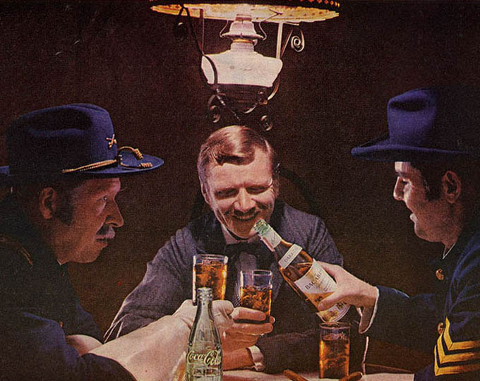
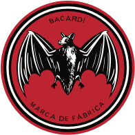

홈 > 브랜드 매거진 > 바카디
바카디
바카디(Bacardí)는 1862년 쿠바에서 설립된 세계적인 럼 브랜드이다.
산업 분야 식음료 · 공개 등급 자료 기반 · 브랜드 평가 4.3 ★


한눈에 보는 브랜드
바카디는 1862년 스페인 출신 사업가 파쿤도 바카르디 마소가 쿠바 산티아고에서 창업한 럼 제조사로, 7대째 가문이 소유한 세계 최대 비상장 가족 주류기업이다. 증류소 천장에 살던 박쥐에서 따온 박쥐 로고로 널리 알려졌으며, 현재 약 8천 명을 고용하고 170여 개국에서 200여 개 브랜드를 판매한다.
브랜드 관점
캡틴모건이 향신료를 더한 무거운 증류액에 캐러멜 색소를 쓰는 반면, 바카디는 1~2년 숙성한 라이트 럼을 여과해 깔끔한 풍미를 내는 콜드 인퓨전 방식으로 차별화한다. 1960년 카스트로 정권의 자산 몰수로 가문은 망명했지만, 혁명 직전 상표와 제조법을 해외로 옮겨둔 덕에 살아남았고 본사를 버뮤다로 이전했다.
그레이구스(보드카), 마티니(베르무트), 봄베이 사파이어(진)를 거느린 가족경영 다브랜드 전략으로 럼 한 종목 의존을 줄였다는 점이 핵심이다. 한국에서는 2007년 바카디코리아 설립 이후 칵테일용 화이트 스피릿 시장을 주도하며, 럼 인기가 낮은 시장에서도 접근성과 합리적 가격으로 입지를 넓혔다.
시작과 성장
1862년 2월 4일 파쿤도 바카르디 마소는 동생과 함께 산티아고 데 쿠바의 증류소를 인수하고, 숯 여과와 효모 배양으로 부드러운 화이트 럼 정제법을 개발했다. 증류소 들보에 살던 과일박쥐를 본 아내 도냐 아말리아가 가족 결속과 행운의 상징으로 박쥐를 병에 새기자, 글을 모르던 손님들도 '박쥐의 럼'을 찾으며 브랜드가 퍼졌다.
1959년 혁명을 지지했던 가문은 공산화 이후 카스트로에 맞섰고, 1960년 10월 14일 정권이 98년간 운영해온 쿠바 자산을 무상 몰수하자 망명길에 올랐다. 다만 혁명 직전 상표와 제조법, 자산을 바하마로 옮기고 푸에르토리코·멕시코 생산 거점을 갖춰둔 덕에 사업을 이어갔으며, 본사를 버뮤다로 이전한 뒤 글로벌 인수로 몸집을 키웠다.
브랜드 아이덴티티
바카디의 핵심 가치는 가족 결속, 회복력, 개척정신이다. 7대를 이어온 가문 소유 구조 자체가 브랜드 서사이며, 망명과 재건의 역사를 자부심으로 삼는다.
박쥐 로고는 행운과 건강, 단합의 상징으로 일관되게 쓰인다. 타깃은 칵테일을 즐기는 젊은 성인층과 파티 문화 소비자이며, 보이스는 활기차고 자유로우며 라틴 특유의 흥과 축제 감성을 담는다.
제품과 서비스
대표 제품은 화이트 럼 바카디 수페리오르(카르타 블랑카)와 골드 럼 카르타 오로이며, 블랙(다크 럼)과 레몬 등 가향 럼으로 라인업을 넓혔다. 미국 기준 골드 럼이 한 병 약 15달러대로 합리적이며, 계열 브랜드로 그레이구스 보드카, 마티니 베르무트, 듀어스 스카치, 봄베이 사파이어 진을 거느린다.
칵테일 바와 대형마트, 온라인 주류몰 등 폭넓은 채널로 유통된다.
사람들
창업자: 파쿤도 바카디 마소(Facundo Bacardí Massó)가 1862년 창업했다. 소유: 바카디 리미티드(Bacardi Limited), 가족 소유의 세계 최대 비상장 주류사.
현재 상태
바카디는 바카르디 가문이 7대째 소유한 비상장 기업으로, 창업자의 고손자 파쿤도 엘 바카르디가 이사회 의장을 맡고 있다. 본사는 버뮤다 해밀턴에 있으며, 비상장 특성상 상세 재무는 공개되지 않는다.
업계가 추정하는 연매출은 약 50억 달러(수조원대) 규모로 거론되나 회사가 공식 확인한 수치는 아니다.
타임라인
BI/CI 변천사
함께 읽을 브랜드
TK
더본코리아
식음료 · 자료 기반더본코리아더본코리아는 백종원이 이끄는 한국의 외식 프랜차이즈 기업으로, 빽다방·홍콩반점·새마을식당·한신포차 등 다수의 외식 브랜드를 한 회사 안에서 운영한다. 가맹사업을 중심...
네슬레(Nestlé)는 스위스 브베에 본사를 둔 세계 최대 규모의 식음료 다국적 기업이다.
BI
비비고
식음료 · 자료 기반비비고비비고(bibigo)는 CJ제일제당이 2010년 출시한 글로벌 한식 브랜드로, 만두·김치·즉석밥·한식 소스 등 100여 종의 한국 식품을 약 70개국에서 판매한다.
맥도날드는 가장 평범한 소비재를 세계 어디서나 읽히는 대중문화의 기호로 바꾼 브랜드다. 햄버거와 감자튀김은 단순한 메뉴지만, 맥도날드는 속도, 표준화, 접근성, 익숙...
KFC(Kentucky Fried Chicken)는 할랜드 샌더스 대령이 창립한 미국 기반의 글로벌 프라이드 치킨 프랜차이즈이다.
 식음료 · 자료 기반립톤
식음료 · 자료 기반립톤립톤(Lipton)은 토머스 립톤이 창시한 영국 기원의 글로벌 차 브랜드이다.
 식음료 · 자료 기반노티드
식음료 · 자료 기반노티드노티드는 운영사 지에프에프지가 전개하는 프리미엄 도넛·디저트 브랜드다. 우유생크림도넛으로 대표되는 구멍 없는 생크림 도넛을 앞세워 오픈런을 부르는 인기 디저트로 자리...
SF
삼진어묵
식음료 · 자료 기반삼진어묵삼진어묵은 부산 영도에 뿌리를 둔 수산가공식품 기업으로, 현존하는 한국 어묵 제조업체 가운데 가장 오래된 곳으로 평가된다. 시장통의 값싼 반찬으로 여겨지던 어묵을 빵...